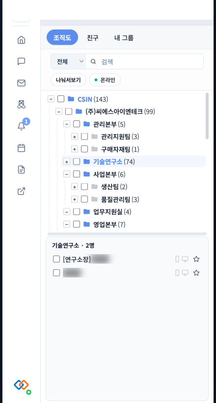
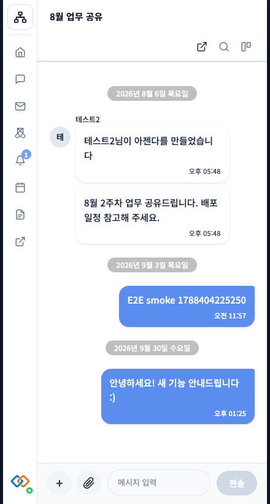
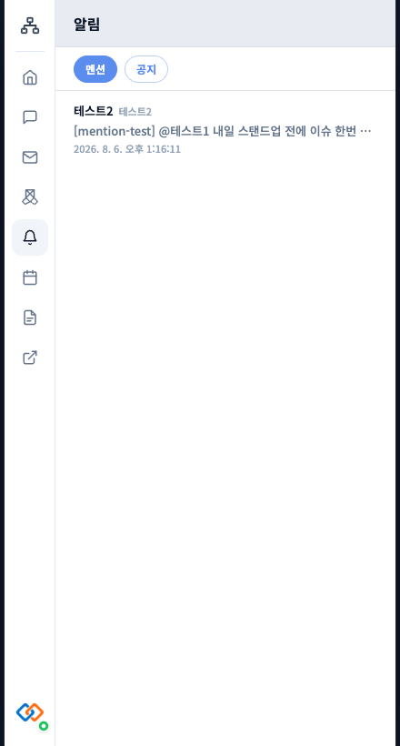
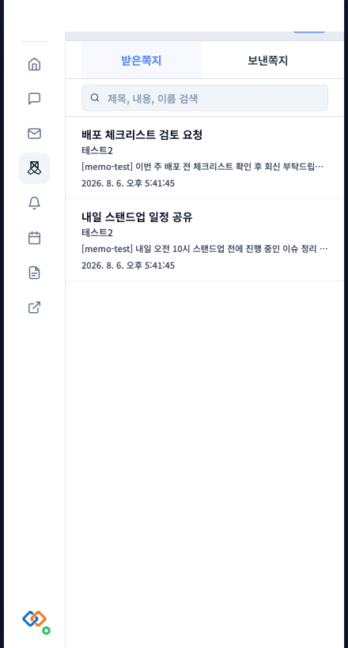
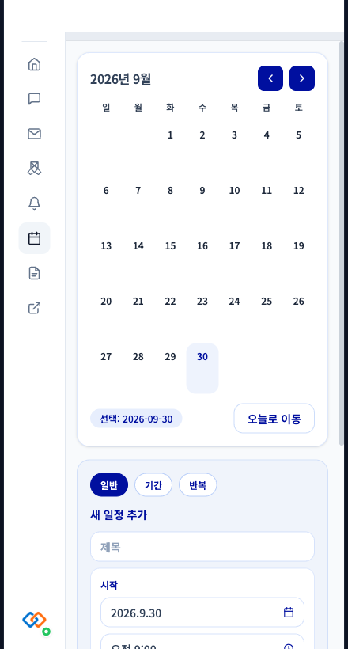
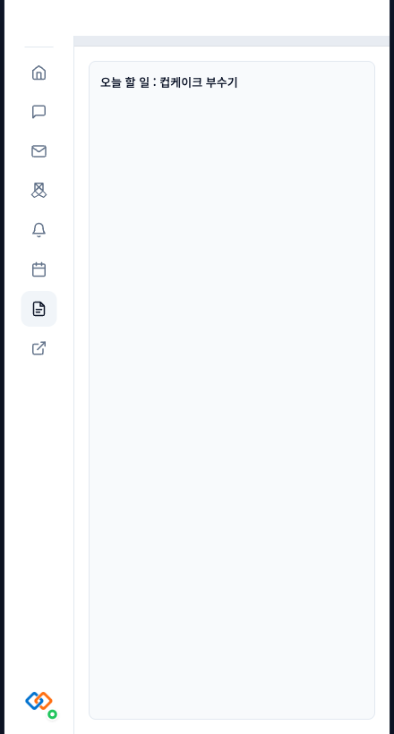
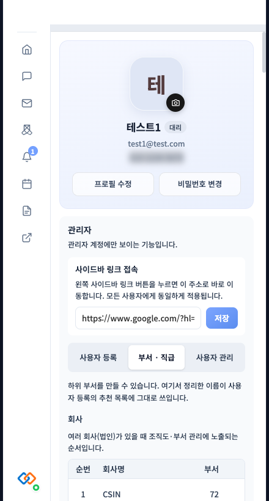
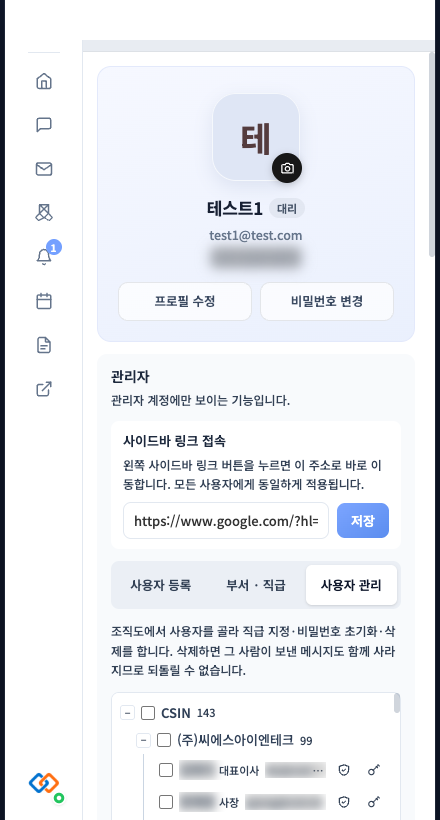
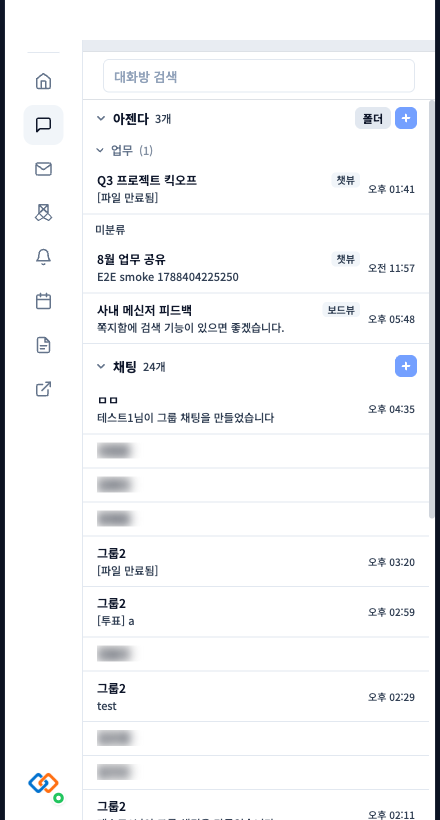

Electron 기반 사내 메신저입니다. 조직도로 동료를 찾아 바로 대화를 시작하고, 쪽지·일정·메모장·공지사항까지 하나의 앱에서 사용합니다.
로그인 후 왼쪽 사이드바에서 바로 접근할 수 있는 핵심 기능입니다.

부서 트리에서 동료를 검색하고, 더블클릭으로 바로 대화를 시작합니다. "온라인"만 모아보는 필터도 지원합니다.

1:1·그룹 채팅, 파일 전송, @멘션을 지원합니다. 채팅방은 즐겨찾기·알림 끄기·폴더로 정리할 수 있습니다.

나를 멘션한 메시지와 관리자가 등록한 전체 공지를 한 곳에서 확인합니다.

대화방 이력 없이 간단히 주고받는 개별 메시지입니다. 받은쪽지함·보낸쪽지함으로 관리합니다.

캘린더에서 일반·기간·반복 일정을 등록하고 조회합니다.

나만 보는 개인 메모입니다. 입력 중 자동으로 저장됩니다.
회사에서 안내한 다운로드 링크에서 설치 파일을 받아 실행하면 됩니다.
.dmg 파일을 다운로드한 후 열어서 앱을 Applications 폴더로 드래그하세요.Setup .exe 파일을 다운로드한 후 실행해서 설치하세요. (일반 PC는 x64, Windows on ARM은 arm64)xattr -cr /Applications/앱이름.app 를 실행한 뒤 다시 실행하면 됩니다.
자세한 내용은 사용자 가이드를 참고하세요.
서버 설치, 클라이언트 빌드·배포, 자동 업데이트, 장애 대응까지 관리자가 알아야 할 내용을 정리했습니다.
Docker Compose로 DB·API 서버를 한 번에 실행합니다. LDAP 연동, 거래처 조직 동기화 등 선택 기능을 지원합니다.
macOS(.dmg)/Windows(.exe) 설치 파일을 빌드해 GitHub Releases로 배포합니다. 설치된 앱은 자동으로 최신 버전을 내려받습니다.
관리자 계정은 설정 패널에서 사용자 등록, 부서·직급 관리, 비밀번호 초기화를 바로 처리할 수 있습니다.
흰 화면, 알림 미수신, DB 연결 오류 등 자주 발생하는 문제와 점검 방법을 정리했습니다.
관리자 계정으로 로그인하면 설정 패널 안에 조직·사용자 관리 도구가 나타납니다.



더 자세한 내용은 아래 두 가이드에서 확인하세요.